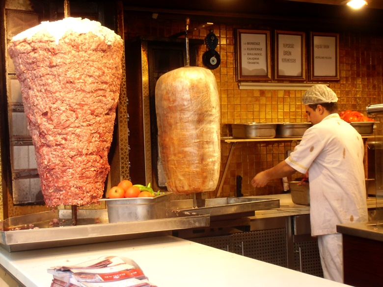

Estambul
Sus calles están llenas de contrastes que separan dos mundos antagónicos: oriente y occidente. Entre sus grandes y poderosas mezquitas – como la Mezquita Azul (Sultan Ahmed) y la de Santa Sofía (antigua basílica y posterior mezquita) – se alternan bares y restaurantes occidentales, como los de la zona de Beyoglu, junto a la emblemática Plaza Taksim y la Torre de Gálata. Y el Gran Bazar, una ciudad aparte hecha de tiendas de todo tipo.

Miluska: Estambul destila magia. Ayer mismo la veía en la gran pantalla del cine – como escenario pasajero del comienzo de la nueva película de Kennet Branagh, ‘Asesinato en el Orient Express‘ – y sentía, de nuevo, ese cosquilleo por el estómago que te asalta cuando ves a uno de esos amores que te han marcado en la vida, auque haya pasado el tiempo.
Dicen que París tiene la vitola de ser la ciudad más romántica del mundo, pero yo te digo que hay pocas cosas más románticas – en el sentido más amplio de la palabra – que navegar al atardecer por el Bósforo . Cerca del puerto, el bullicio y el ajetreo es incesante. Los capitanes de los ferris, cargados de turistas, maniobran con una maestría que hacen que sean ellos los únicos que ven huecos donde no los hay en esa especie de juego del “Enredos” marítimo.

El Gran Bazar parece una ciudad dedicada al comercio. Las calles se entrecruzan aquí y allá en una maraña casi imposible de desentrañar para el turista. Más vale que tomes algún puesto de referencia al entrar si no quieres perderte entre puestos de alfombras, zapatillas, abrigos, camisetas, objetos de decoración, joyas, zapatos, botas, lámparas, imitaciones de todo tipo.
Y si el lado asiático es tan distinto a lo que conoces, la calle Istiklal es lo más comercial que ver en Estambul. Restaurantes de las típicas franquicias americanas se mezclan con otros turcos, tiendas, bares de marcha (más bien cutres), hostales y un río incesante de gente que va arriba y abajo durante todo el día. Tristemente, es aquí y en su desembocadura en la Plaza Taksim donde se producen todas las represiones a las constantes protestas que los estudiantes turcos están organizando en los últimos años contra el gobieron de Erdogan.
La Mezquita Azul es la heredera del Gran Palacio de Constantinopla. El antiguo palacio había servido como residencia de los emperadores bizantinos desde los tiempos del Emperador Constantino. Tras distintos saqueos, por parte tanto de cruzados como de árabes, y algún incendio, el palacio quedó en ruinas cuando Mehmet II entró en Constantinopla en 1453.
Si tu viaje a Estambul te lleva a pasar un domingo en la capital turca, no dejes de visitar el barrio de Ortaköy . Aunque está un poco más alejado del centro, se puede llegar a él dando un largo paseo. Allí encontrarás un mercadillo dominguero con algunos puestos de artesanía y muchos de comida. No dejéis de probar una de las patatas inmensas, hervidas y rellenas de verduras, salchichas y dos o tres salsas distintas.